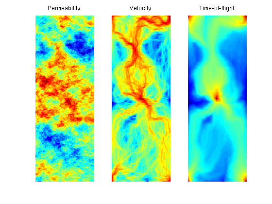
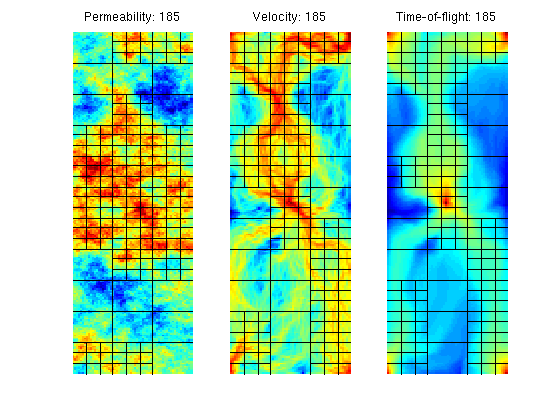
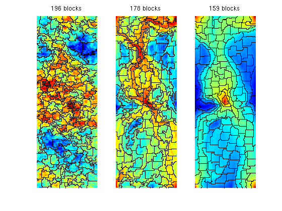
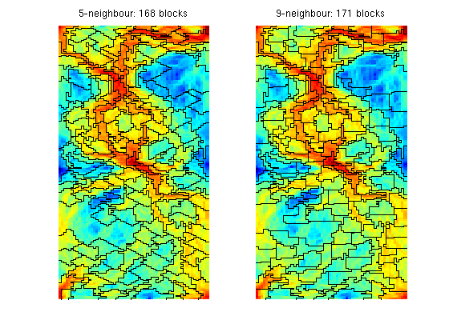
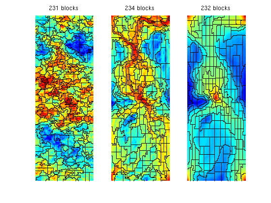

Example 3: Different Flow Indicators
We present two examples of coarsening algorithms that fall into the general algorithmic framework described by Hauge et al [1]:
- uniform refinement of high-flow zones in a Cartesian grid
- the nononuniform coarsening algorithm
Both algorithms are applied to a 2D five-spot example with heterogeneity sampled from a lateral layer of the SPE10 model. For each algorithm, we consider three different flow indicators based on the absolute permeability, the velocity magnitude, and time-of-flight.
References:
- V. L. Hauge, K.-A. Lie, J. R. Natvig, Grid coarsening based on amalgamation for multi-fidelity transport solvers, September 2010, http://www.sintef.no/Projectweb/GeoScale/Publications/
Contents
Set up and solve flow problem
As our example, we consider a standard five spot with heterogeneity sampled from Model 2 of the 10th SPE Comparative Solution Project.
try require spe10 catch me mrstModule add spe10; end try require gridtools catch me mrstModule add gridtools; end try require coarsegrid catch me mrstModule add coarsegrid; end [G, W, rock] = SPE10_setup(25); rock.poro = max(rock.poro, 1e-4); fluid = initSingleFluid('mu', 1*centi*poise, 'rho', 1014*kilogram/meter^3); rS = initState(G, W, 0); S = computeMimeticIP(G, rock); rS = solveIncompFlow(rS, G, S, fluid, 'wells', W);
We will use the following cell-wise indicators:
- the absolute permeability
- the magnitude of the velocity at the cell center
- the product of the forward and backward time-of-flight
For all indicators, we perform a logarithmic scaling
clf iK = log10(rock.perm(:,1)); iK = iK - min(iK) + 1; subplot(1,3,1); plotCellData(G,iK); axis tight off title('Permeability') v = faceFlux2cellVelocity(G, rS.flux); v = sqrt(sum(v .^ 2, 2)); iV = log10(v); iV = iV - min(iV) + 1; subplot(1,3,2); plotCellData(G,iV); axis tight off; title('Velocity') T = computeTimeOfFlight(rS, G, rock, 'wells', W); Tr = computeTimeOfFlight(rS, G, rock, 'wells', W, 'reverse', true); iT = -log10(T.*Tr); iT = iT - min(iT) + 1; subplot(1,3,3); plotCellData(G,iT); axis tight off; title('Time-of-flight')
Uniform Refinement of High-Flow Zones
We start by a uniform 3x11 partition of the model and then add an extra 3x3 refinement in all blocks in which the block indicator exceeds the upper bound: Ib > NU*mean(Ic), where Ib is the indicator per block, Ic is the indicator per cell, and NU is a user-prescribed parameter.
p1 = partitionUI(G, [3, 11, 1]); pK = refineBlocks(p1, G, iK, 380, @refineUniform, 'CartDims', [3,3,1]); pV = refineBlocks(p1, G, iV, 390, @refineUniform, 'CartDims', [3,3,1]); pT = refineBlocks(p1, G, iT, 380, @refineUniform, 'CartDims', [3,3,1]); subplot(1,3,1) outlineCoarseGrid(G, pK); title(sprintf('Permeability: %d', max(pK))) subplot(1,3,2) outlineCoarseGrid(G, pV); title(sprintf('Velocity: %d', max(pV))) subplot(1,3,3) outlineCoarseGrid(G, pT); title(sprintf('Time-of-flight: %d', max(pT)))
Using the two flow-based indicators iV and iT, rather than the a priori permeability indicator iK, gives grids that better adapt to the flow pattern. This is no surprise, since iK only distinguishes between zones with high permeability and low permeability, whereas the other two indicators also account for the influence of the forces that drive the flow.
The 'Nonuniform Coarsening' (NUC) Algorithm
Next, we consider the nonuniform coarsening algorithm and compare the grids generated using the three flow indicators introduced above
clf numBins = 10; NL = 30; NU = 80; I = [iK iV iT]; for i=1:3 p = segmentIndicator(G, I(:,i), numBins); p = mergeBlocks2(p, G, rock.poro, I(:,i), NL, NU); p = refineBlocks(p, G, I(:,i), NU, @refineGreedy2); p = mergeBlocks2(p, G, rock.poro, I(:,i), NL, NU); subplot(1,3,i), plotCellData(G, I(:,i)), outlineCoarseGrid(G,p); axis tight off, title(sprintf('%d blocks', max(p))); end
Warning: Some blocks still violate lower (volume) bound after merging.
In the algorithm above, the greedy algorithm considers a 9-point neighbourhood when growing cells. In the original paper, the authors used a 5-point neighbourhood, which gives more diamond-shaped cells as shown in the figure below
clf for i=1:2 p = segmentIndicator(G, iV, numBins); p = mergeBlocks(p, G, rock.poro, iV, NL); p = refineBlocks(p, G, iV, NU, @refineGreedy2,'nlevel',i); p = mergeBlocks(p, G, rock.poro, iV, NL); subplot(1,2,i), plotCellData(G, iV), outlineCoarseGrid(G,p); axis tight off, title(sprintf('%d-neighbour: %d blocks', 2^(i+1)+1, max(p))); end
In the two previous plots, we used the greedy algorithm to refine blocks. We can, of course, also other types of refinement algorithms of each block that exceeds the upper bound on the total flow. For a Cartesian grid, the 'refineUniform' method performs a uniform refinement of the bounding box of each block that exceeds the upper limit.
clf for i=1:3 p = segmentIndicator(G, I(:,i), numBins); p = mergeBlocks2(p, G, rock.poro, I(:,i), NL, NU); p = refineBlocks(p, G, I(:,i), NU, @refineUniform, 'CartDims',[2,2,1]); p = mergeBlocks2(p, G, rock.poro, I(:,i), NL, NU); subplot(1,3,i), plotCellData(G, I(:,i)), outlineCoarseGrid(G,p); axis tight off, title(sprintf('%d blocks', max(p))); end
Warning: Some blocks still violate lower (volume) bound after merging.